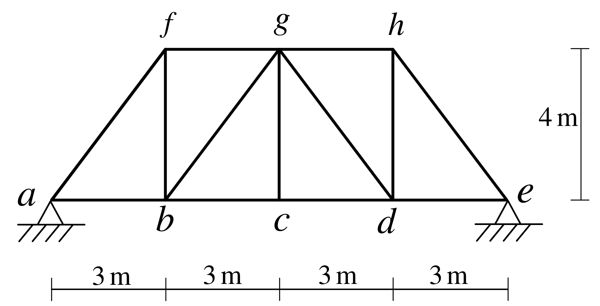
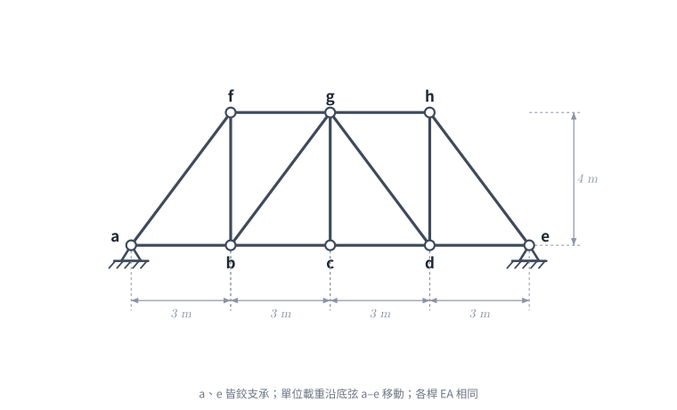
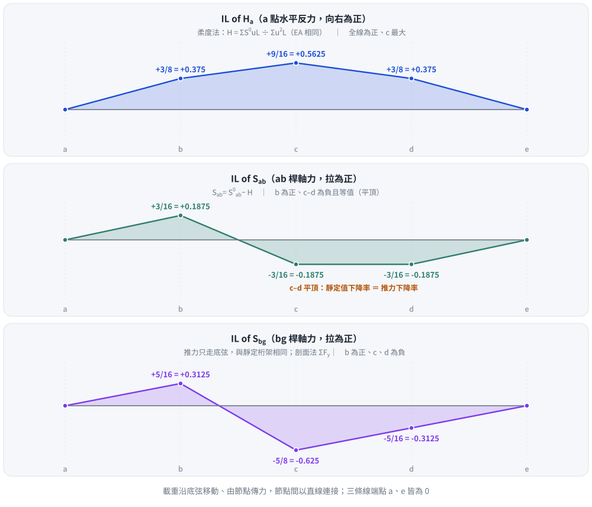

📄 題目正本（考卷原文、附圖與判讀清單；不含解法）
SA-2021-3 題目正本
本檔只記錄考卷上寫了什麼、圖上畫了什麼，不含任何解法。解析見同資料夾
SA-2021-3.md。
判讀清單經使用者確認前，狀態為「待確認」；確認後本檔原則上不再修改（改動須回考卷原圖並記 log）。
| 項目 | 內容 |
|---|---|
| 考卷 | raw/exams/SA-2021_結構學.pdf，第 2 頁（頁次 2－2），第三題（圖 3） |
| 考年 | 2021（民國一百一十年）專技高考結構工程技師「結構學」 |
| 配分 | 25 分 |
| 附圖 | SA-2021-3-fig-2.png（2026-11-07 重新擷取）；既有 SA-2021-3-fig-1.png |
| 判讀狀態 | 已確認（2026-11-07 使用者確認。原轉錄：2026-11-07 轉錄；PyMuPDF 110 dpi 整頁＋450–1200 dpi 局部放大；考卷可抽文字，逐字原文以 PDF 文字層核對；盲讀於開啟解析前完成） |
1. 考卷原文（逐字）
三、如圖示桁架結構，a 點及 e 點都為鉸支承，各桿件有相同彈性模數 E 與斷面積 A。當向下之單位載重在桁架底弦 abcde 移動，分別求 a 點水平反力、ab 桿件及 bg 桿件軸力的影響線。（25 分）
2. 考卷給的公式、附表與參數
- 考卷沒有給任何參考公式或附表。
- 各桿 EA 相同，沒有給數值。
- 卷首注意事項：㈠可以使用電子計算器。㈡不必抄題，作答時請將試題題號及答案依照順序寫在試卷上，於本試題上作答者，不予計分。㈢本科目除專門名詞或數理公式外，應使用本國文字作答。
- 考試時間：2 小時。
3. 附圖

證據圖 SA-2021-3-fig-2.png（2026-11-07 自考卷 500 dpi 重新擷取）；既有 SA-2021-3-fig-1.png 帶有滑鼠游標（箭頭游標在 fb–bg 之間的格內，未壓到桿件），保留不改。
圖面文字照錄：f、g、h、a、b、c、d、e、4 m、3 m、3 m、3 m、3 m、圖 3
4. 判讀清單
| # | 項目 | 判讀 | 圖上／題文依據 | 把握 |
|---|---|---|---|---|
| 1 | 座標（以 a 為原點） | a(0,0)、b(3,0)、c(6,0)、d(9,0)、e(12,0)；f(3,4)、g(6,4)、h(9,4) | 下方 4×3 m、右側 4 m 尺寸線；f、g、h 與 b、c、d 垂直對齊（450 dpi） | 確定 |
| 2 | 桿件 | 下弦 ab、bc、cd、de；上弦 fg、gh；端斜桿 af、he；豎桿 fb、gc、hd；斜桿 bg、gd；共 13 桿 | 450 dpi | 確定 |
| 3 | 斜桿方向 | bg 由 b 往右上到 g；gd 由 g 往右下到 d | 450 dpi | 確定 |
| 4 | 支承 a、e | 皆為鉸支承（三角形＋剖線） | 題文＋圖面 | 確定 |
| 5 | 靜不定度 | j = 8、m = 13、r = 4：m + r − 2j = 1，一度（外部）靜不定 | 計數 | 確定 |
| 6 | EA | 各桿相同 | 題文 | 確定 |
| 7 | 移動載重 | 向下單位載重，只在底弦 a–e 上移動 | 題文 | 確定 |
| 8 | 所求 | a 點水平反力、ab 桿軸力、bg 桿軸力的影響線 | 題文 | 確定 |
轉錄：2026-11-07（SA-U1-3 題目正本推廣・批 1）
確認：2026-11-07 使用者確認
考題編號：SA-2021-3
主分類： SA-U1-3 靜定及靜不定結構影響線
副分類： 無
分析法： 單位力法 (柔軟度法)
標籤： 影響線 靜不定桁架 單位力法 柔軟度法 Müller-Breslau
1. 題目（考卷原文見題目正本）
考卷原文、公式／附表、附圖與判讀清單（已確認）見
SA-2021-3-problem.md。本節只列解題時最容易讀錯的地方與本解使用的記號；題意以題目正本為準。

重繪自考卷附圖，依判讀清單 #1–#8 重繪。攔：e 讀成滾支承（當成靜定）、斜桿 bg／gd 方向讀反。
常見誤讀
| 項目 | 正確判讀 | 常見誤讀 |
|---|---|---|
| e 支承 | 鉸支承（兩端皆鉸，一度靜不定） | 滾支承 |
| 斜桿方向 | bg 往右上、gd 往右下 | 對調 |
| 載重 | 向下單位力只在底弦 a–e 移動 | 上弦 |
本解記號： 記號與正負號約定沿用 §4。
2. 考題核心精神與出題者意圖 (Core Concepts & Examiner's Intent)
本題的核心在於「一次外部靜不定桁架的影響線」求法。
因為兩端均為鉸支承，結構無法自由熱脹冷縮或受力伸長。出題者刻意要求 $H_a$ 的影響線，旨在引導考生使用柔軟度法 (Force Method) 配合 Maxwell-Betti 互勢定理。
只要解除一端的水平約束（例如讓 $e$ 成為滾支承）作為基本結構，求出底弦的變形量，就能反推水平贅力 $H_a$。
同時，求 $S_{bg}$ 影響線時，測試考生是否能察覺到「水平贅力對斜腹桿不產生任何內力」，從而大幅簡化計算（$S_{bg}$ 與靜定結構完全相同）。
3. 解題戰略地圖與陷阱分析 (Strategic Roadmap & Trap Analysis)
解題策略：
- 決定基本結構：解除 $e$ 點的水平約束，視為滾支承。定義贅力 $H_e$（向左）。
- 求柔軟度系數 $f_{ee}$：在 $e$ 點施加向右的單位水平力，求 $e$ 點水平位移。此時僅有底弦四根桿件受單位張力（$u=1$），其餘桿件內力為 0。
- 求垂直載重造成的位移 $\Delta_{e0}$：單位垂直載重在底弦移動時，$e$ 點的水平位移等於底弦桿件受該載重時的總伸長量（由虛功原理證明）。
- 計算 $H_a$ 影響線：由諧和條件 $H_e \cdot f_{ee} = \Delta_{e0}$ 求出推力 $H_{thrust}$，進而得到 $H_a$。
- 疊加法求桿件內力：$S = S^0 + H \cdot u$。
- $S_{ab} = S_{ab}^0 - H_{thrust}$（因為贅力造成底弦受壓）。
- $S_{bg} = S_{bg}^0$（因為 $u_{bg} = 0$，水平贅力不影響網桿）。
陷阱分析：
- 陷阱 1：忽略靜不定性：若沒仔細看文字，以為是一般的簡支桁架（一鉸一滾），將直接導致 $H_a=0$ 而全錯。
- 陷阱 2：贅力符號混淆：水平贅力 $H$ 究竟是造成底弦拉力還是壓力？當桁架受垂直力下凹時，底弦企圖伸長，兩端鉸支承會阻止其伸長，故提供「向內的推力」，使底弦受到額外壓力。
- 陷阱 3：逐點硬算：若不用單位力法與影響線公式，逐點（a, b, c, d, e）放載重解靜不定，計算量會大到無法在時間內完成。
3.5 變數層次分析 (Variable Hierarchy Analysis)
最終目標
利用柔軟度法求出水平贅力影響線，再疊加靜定狀態內力以求得各桿件影響線。
本題關鍵公式（依計算順序）
$$\text{Step 1: } f_{ee} = \sum \frac{u^2 L}{AE}$$
$$\text{Step 2: } v_i = \Delta_{e0}^{(i)} = \sum \frac{u \cdot S^0 L}{AE} \quad \Rightarrow \quad H_{thrust}^{(i)} = \frac{v_i}{f_{ee}}$$
$$\text{Step 3: } S_{ab} = S_{ab}^0 - H_{thrust}$$
$$\text{Step 4: } S_{bg} = S_{bg}^0$$
L1：題目直接給定
| 符號 | 數值 | 說明 |
|---|---|---|
| $AE$ | 常數 | 桿件軸向剛度 |
| $L_{bottom}$ | $3 \text{ m}$ (每段) | 底弦每節間長度 |
| $h$ | $4 \text{ m}$ | 桁架高度 |
L2：需知識點推導
Step 1：基本結構的水平位移 ($f_{ee}$)
| 符號 | 公式/來源 | 卡關? |
|---|---|---|
| $u_{bottom}$ | $1$ | 兩端施加單位拉力時，僅底弦有張力 1 |
| $f_{ee}$ | $4 \times (1^2 \cdot 3 / AE) = 12/AE$ | 單位推力造成的水平變形 |
L3：深層知識（不懂就卡住）
| 知識點 | 說明 | 卡關? |
|---|---|---|
| 水平贅力不影響腹桿 | 在桁架兩端施加水平對向力，力流將沿著筆直的底弦傳遞，不會向上進入斜桿與頂弦，故 $u_{bg} = 0$。 | |
| 等效梁力矩轉換 | $S_{ab}^0 = M_f/h$；且底弦位移量 $v_i \propto \sum M/h$，可由等效梁快速求得靜定狀態內力。 |
4. 步驟化詳細計算過程 (Step-by-Step Detailed Calculation)
Step 1：設定基本結構與 $f_{ee}$
解除 $e$ 點水平約束，設為滾動支承。若在 $a, e$ 兩端施加向外拉開的單位水平力，其對應的內力 $u$ 為：
- 底弦 $ab, bc, cd, de$：$u = +1$ (拉力)
- 其餘所有桿件：$u = 0$
$e$ 點的單位水平位移為：
$$f_{ee} = \sum \frac{u^2 L}{AE} = 4 \times \frac{1^2 \cdot 3}{AE} = \frac{12}{AE}$$
Step 2：求各載重位置下 $e$ 點的變形 $v_i$
單位垂直力位於 $i$ 點時，$e$ 點的水平位移 $v_i$ 等於底弦的總伸長量：
$$v_i = \sum_{bottom} \frac{1 \cdot S^0 \cdot 3}{AE} = \frac{3}{AE} \sum S_{bottom}^0$$
計算靜定狀態下各節點負載的 $\sum S_{bottom}^0$（可用等效梁彎矩 $M/h$ 計算）：
-
載重於 $b$：$S_{ab}^0=\frac{9}{16}, S_{bc}^0=\frac{6}{16}, S_{cd}^0=\frac{6}{16}, S_{de}^0=\frac{3}{16} \Rightarrow \sum = \frac{24}{16} = 1.5$
$\Rightarrow v_b = \frac{4.5}{AE}$ -
載重於 $c$：$S_{ab}^0=\frac{6}{16}, S_{bc}^0=\frac{12}{16}, S_{cd}^0=\frac{12}{16}, S_{de}^0=\frac{6}{16} \Rightarrow \sum = \frac{36}{16} = 2.25$
$\Rightarrow v_c = \frac{6.75}{AE}$ -
載重於 $d$：（對稱於 $b$） $\Rightarrow v_d = \frac{4.5}{AE}$
Step 3：計算 $H_a$ 影響線
桁架受載下垂，傾向伸長，兩端鉸支承提供向內推力 $H_{thrust}$。
$$H_{thrust}^{(i)} = \frac{v_i}{f_{ee}}$$
- $H_b = \frac{4.5/AE}{12/AE} = \frac{3}{8}$
- $H_c = \frac{6.75/AE}{12/AE} = \frac{9}{16}$
- $H_d = \frac{4.5/AE}{12/AE} = \frac{3}{8}$
因題目要求「$a$ 點水平反力」，為阻止結構向左伸長，$H_a$ 方向必定向右。
$H_a$ 影響線數值： $a(0), b(3/8), c(9/16), d(3/8), e(0)$。
Step 4：計算 $S_{ab}$ 影響線
真實內力 $S_{ab} = S_{ab}^0 - H_{thrust}$ （推力使底弦受壓）。
- 載重於 $b$：$S_{ab} = \frac{9}{16} - \frac{6}{16} = \frac{3}{16}$
- 載重於 $c$：$S_{ab} = \frac{6}{16} - \frac{9}{16} = -\frac{3}{16}$
- 載重於 $d$：$S_{ab} = \frac{3}{16} - \frac{6}{16} = -\frac{3}{16}$
$S_{ab}$ 影響線數值： $a(0), b(3/16), c(-3/16), d(-3/16), e(0)$。
Step 5：計算 $S_{bg}$ 影響線
斜腹桿內力不受水平推力影響，故 $S_{bg} = S_{bg}^0$。
使用剖面法切開 $bc, bg, fg$，考慮左半段 $\sum F_y = 0$：
（$bg$ 長 5m，斜率 3:4:5，$\sin\theta = 4/5 = 0.8$）
-
載重於 $b$：左側受向上反力 $V_a=0.75$ 及向下單位力 $1$。
$0.75 - 1 + 0.8 S_{bg} = 0 \Rightarrow S_{bg} = \frac{5}{16}$ -
載重於 $c$：左側僅受 $V_a=0.5$（載重在右側不計）。
$0.5 + 0.8 S_{bg} = 0 \Rightarrow S_{bg} = -\frac{5}{8} = -\frac{10}{16}$ -
載重於 $d$：左側僅受 $V_a=0.25$。
$0.25 + 0.8 S_{bg} = 0 \Rightarrow S_{bg} = -\frac{5}{16}$
$S_{bg}$ 影響線數值： $a(0), b(5/16), c(-5/8), d(-5/16), e(0)$。

圖 2 $H_a$、$S_{ab}$、$S_{bg}$ 影響線（載重由節點傳力，節點間直線）。攔的是把兩端鉸支承桁架當簡支而令 $H_a = 0$、$S_{ab}$ 只用靜定值（漏減推力，c、d 符號整個反過來），以及以為推力也改變腹桿 —— $S_{bg}$ 與靜定桁架相同；縱距另以全桁架節點法＋柔度法重解比對。
5. 關鍵爭議點與進階探討 (Critical Issues & Advanced Discussion)
- 底弦內力 $S_{ab}$ 的「平頂」現象：在影響線 $c$ 到 $d$ 區間，$S_{ab}$ 的數值維持常數 $-3/16$。這並非計算錯誤，而是幾何與剛度比例的巧合。當載重從 $c$ 移至 $d$ 時，靜定桁架下 $S_{ab}^0$ 的下降率，恰好等於兩端水平推力 $H_{thrust}$ 的下降率，兩者相抵消造成此區間呈水平直線。這種特殊形狀是檢驗計算正確性的重要標誌。
修正日期：2026-11-07（§1 改為指向題目正本並放重繪附圖（figs/SA-2021-3-fig-1-problem.svg）、加常見誤讀；圖由 gen_SA-2021-3.py 產生，可重跑）
圖解補繪：2026-11-07（圖 2 影響線，向量圖，腳本 gen_SA-2021-3_il.py，可重跑）